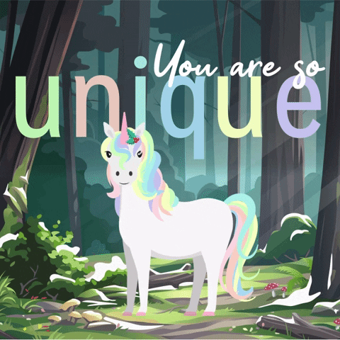
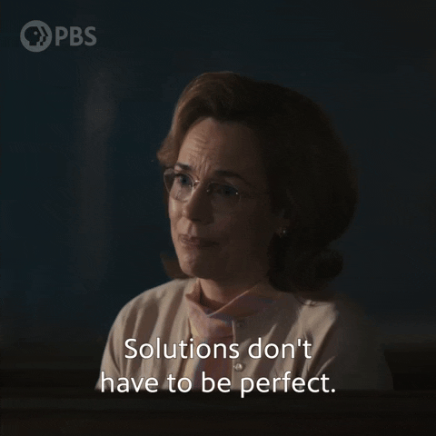

Welcome!
- DI GUEST / Strangebirds
- https://bit.ly/cc-portfolio-website
- https://bit.ly/kcwit-cc-worksheet
- Chrome and GitHub
WiFI access:
Presentation Link
Worksheet Link
Be sure to have these tools ready:
Personal Portfolio Site
The C&C #LadyDevs

Amy Norris
Director

Alex Herron
Co-Director

Julie Batson
Curriculum Director

Gabi Dombrowski
Mentor Director

Kim Watt
Marketing Director

Vanessa Shultz
Co-Presentation Director

Alicia Villegas
Co-Presentation Director

Tracy Hockenhull
Technical Materials Director
Our Host this Evening
Dimensional Innovations
Custom Cocktails By:

Laura Kozak
Our mentors

are super heroes!
#@*&!!
(There will be swear words)
Personal Branding...
Why is it important?
What is Personal Branding?
- How you present yourself professionally
- Tell me a story: about your skills, values, and passions
- Grow and evolve with your experience
Why is Personal Branding Important?
- Helps you stand out in a competitive job market
- Shows potential employers who you are beyond your resume
- Keeps your look consistent across platforms so people are more likely to remember you
Where to Show Your Brand
- Portfolio website
- LinkedIn profile
- GitHub profile
- Networking events and online communities websites
Tips for Beginners
- Be authentic—let your personality show
- Highlight your learning journey and growth
- Keep it simple and "professional"
- Don’t be afraid to start small and build over time
Most importantly...
- DON'T LOOK FOR PERFECTION!!!!!
- Better to get this out NOW than perfect it
- Build onto it later
Trigger Warning!
How to Brand Yourself
Process of Finding Your "Brand"
- Self-Discovery Questions
- Visual and Verbal Consistency
- Apply Your Brand
- What are your professional goals?
Process of Finding Your "Brand"
- Self-Discovery Questions
- Visual and Verbal Consistency
- Apply Your Brand
Self-Discovery Questions
- What are your top strengths? (e.g. problem-solving, creativity, communication)
- What are you most passionate about both inside and outside tech?
- What best describes your personality?
- What are your professional goals?
What To Do With These Self-Discovery Questions
- Journal your answers
- Give yourself space to discover the answers
- Ask know-you-and-support-you people© people these questions about yourself
- Be flexible that answers may change over time
Process of Finding Your "Brand"
- Self-Discovery Questions
- Visual and Verbal Consistency
- Apply Your Brand
Visual and Verbal Consistency
- What colors, fonts, or visual styles feel most “you”?
- What 3–5 words describe your tone (e.g., friendly, bold, analytical)?
- Do you have a consistent headshot or logo across platforms?
- What kind of storytelling voice do you want to use?
Process of Finding Your "Brand"
- Self-Discovery Questions
- Visual and Verbal Consistency
- Apply Your Brand
Apply Your Brand
- Draft a short "about me" blurb that reflects your Self-Discovery Answers
- List projects that you've done (or are doing)
- Apply your headshot or logo across platforms
- (Optional) Choose a phrase, quote or mantra that reflects your personal mission
Apply Your Brand Across Multiple Platforms
- Update your LinkedIn profile with your profile, about me, and summary
- Add to any sites in which you are applying
- Don't forget to add your website (once created) to your LinkedIn and resume!
- Create a portfolio site that reflects your style and values
Personal Portfolio Website
What to Include
- Homepage with your name and tagline
- "About Me" section with background, passions, and goals
- Projects section with links, screenshots, and short descriptions
- Contact information or form
- Optional: Resume download, blog posts, reviews, etc.
Showcase Your Skills
- Use your site to reflect your HTML/CSS skills through layout and styling
- Show off JavaScript or framework knowledge—React, Angular, Vue
- Use animations, transitions, or interactivity (tastefully!)
- Keep code clean and modular—it's a project too!
- Consider including a GitHub link to the source code
Tips for Building Your Portfolio
- Start simple—don’t overthink your first version
- Make it responsive and accessible
- Highlight your most relevant and recent work
- Test everything - and have others test
- Update your site as you learn and grow!
Make something uniquely yours!
Be a unique unicorn...
Portfolio Site Examples
Kansas City Developers
Cool Examples
Final Thoughts
Done is better than perfect.
- Perfect portfolios don’t get hired—visible ones do.
- Jobs come from visibility, not from hiding behind perfection.
- Perfectionism delays opportunity.
...Whatever You Need To Tell Yourself
Reach out on Slack for help or eyes on your portfolio
We are part of your know-you-and-support-you people©️
Work Time
Worksheet: https://bit.ly/cc-worksheets
Slides: https://bit.ly/cc-portfolio-website

Well Done LadyDevs!!

Join us on...
#codingandcocktails
- #kc-jobs
- #generalchat
- #events
- #techtalks
- #announcements
- #interesting-times-initiative
Tech Talks


Register For Next Month's Event